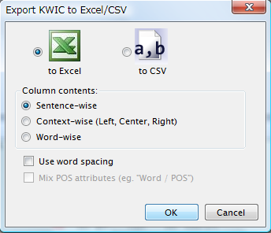
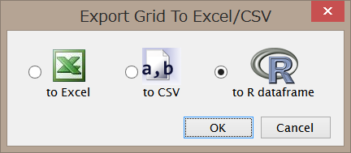

KWICリストのエクスポート
KWICリストをExcelやCSVファイルへエクスポートすることができます。
メニューから"File" - "Send to Excel/CSV"をクリックします。下図のようなダイアログが表示されます。

Excelがインストールされていれば、"to Excel"が選択可能となります。"to CSV"は常に選択可能です。 "Column contents"は、カラムに何を出力するかを指示するオプションで、基本的には表層形を出力するのですが、
| Sentence-wise | 全文を1カラムに出力 |
|---|---|
| Context-wise | KWICの左文脈・中心語・右文脈をそれぞれカラムに分けて出力 |
| Word-wise | 語単位でカラムに分けて出力 |
というように形式を切り替えることができます。
"Use word spacing"をチェックすると、語単位の出力以外の場合に分かち書き出力を行います。
"Mix POS attributes"をチェックすると、語単位で出力する場合、またはそれ以外で分かち書きを行う場合に、「表層形/PartOfSpeech」のようにスラッシュで区切って品詞情報を一緒に出力することができます。
WordList/Collocation のエクスポート
WordListやCollocationなど表形式のビューの内容もExcel/CSV/Rの形式にエクスポートすることができます。
メニューから"File" - "Send to Excel/CSV"をクリックします。下図のようなダイアログが表示されます。

Excelがインストールされていれば、"to Excel"が選択可能となります。"to CSV", "to R dataframe" は常に選択可能です。
CSV, Rの結果はユーザの一時ファイルフォルダに保存され、正常にエクスポートされた場合はそのファイルを Windowsのメモ帳で開いた状態になりますので、必要に応じてコピーするか、別名で保存してください。
なお、Rで結果を読む場合は、次のようにエンコーディングを指定してください。
d <- read.table("tmp8660.d", header=TRUE, fileEncoding="UTF-8-BOM")